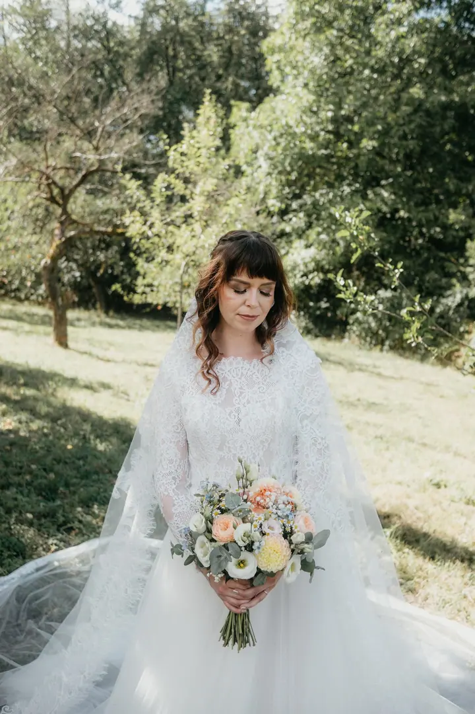
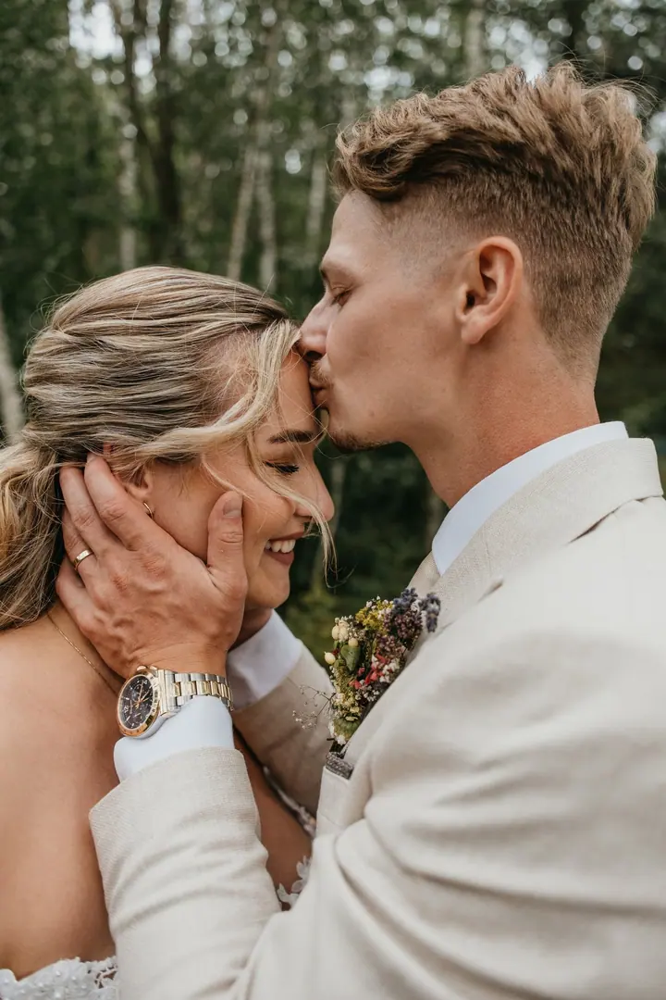
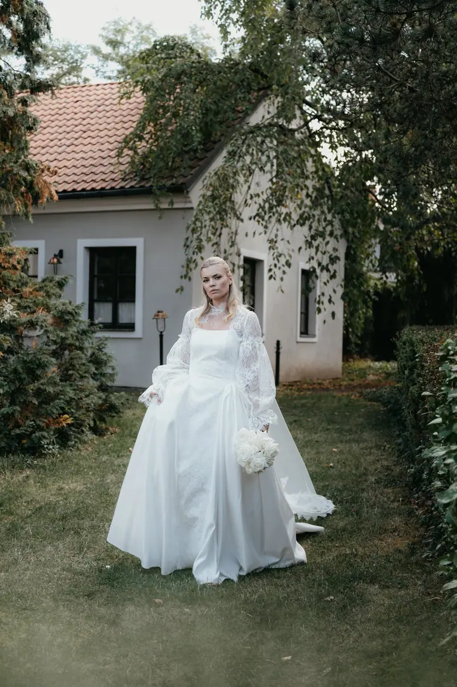
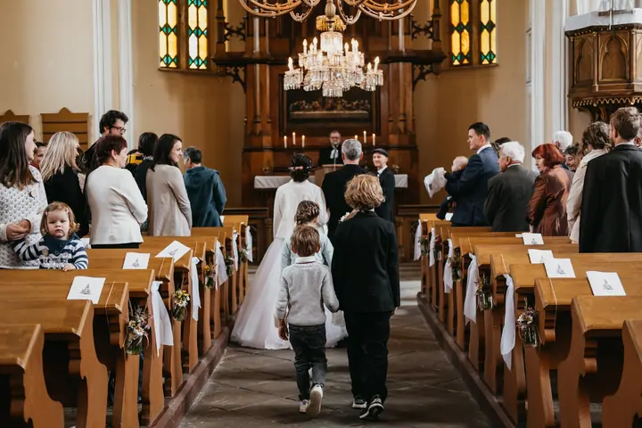

Svatební focení
Fotím celý svatební den od příprav po večerní zábavu, nebo jen obřad a portréty. Do balíčků patří online galerie a tištěné fotografie v krabičce. Na přání fotím i na analogový fotoaparát.

Jmenuji se Aneta Čablíková a jsem svatební a rodinná fotografka ze Zlína. Se svým foťákem nejčastěji hledám emoce a nepózované momenty, abych mohla vyprávět váš příběh t…
Rezervovat termínFotím ze Zlína a moje fotky mají být hlavně plné lásky, úsměvů a přírody. Nejvíc mě baví chvíle, které nikdo nenaaranžoval: smích u obřadu, děti mezi svatebčany nebo tichý moment, kdy jste spolu jen vy dva.


Svatby fotím po celém okolí, třeba na Lukově u Tuskula, na Zámku ZOO Zlín, v Dohnalově mlýně nebo ve Valašské Polance. Na přání vezmu i analogový fotoaparát, protože film má kouzlo, které se nedá napodobit.
Fotky upravuji tak, aby zůstaly přirozené, a retušuji jen výjimečně. Ke každé svatbě dostanete online galerii a tištěné fotografie v krabičce, abyste měli vzpomínky i v ruce, ne jen v telefonu.
Co fotím
Fotím celý svatební den od příprav po večerní zábavu, nebo jen obřad a portréty. Do balíčků patří online galerie a tištěné fotografie v krabičce. Na přání fotím i na analogový fotoaparát.
Projdeme se, popovídáme si a vyfotíme vaše společné chvíle takové, jaké doopravdy jsou. Fotit můžeme v přírodě, ve městě nebo u vás doma.
Klidné focení venku nebo v pohodlí vašeho domova. Nejraději fotím v podvečer, kdy je světlo nejjemnější.
Přirozené portréty bez strojeného pózování, nejčastěji venku v přírodě.
Postup
Přes kontaktní formulář mi pošlete typ focení, datum a pár slov o sobě a o vašem dni. Ráda se s vámi domluvím.
Termín potvrzuje rezervační poplatek: 1 500 Kč u párového a rodinného focení, 4 000 Kč u svatby. Před svatbou si spolu ještě zavoláme nebo se potkáme.
Fotit můžeme venku i u vás doma. Nejkrásnější světlo bývá při západu slunce, na jaře a v létě kolem 19. až 20. hodiny, na podzim a v zimě kolem 14. až 15. hodiny.
Upravené fotografie najdete v osobní online galerii do 3 týdnů, ze svatby nejpozději do 6 týdnů. Ke svatebním balíčkům patří i tištěné fotky v krabičce.
Otázky
Obřad a portréty začínají na 6 900 Kč, půldenní focení stojí 15 900 Kč a celodenní 21 000 Kč, nebo 23 000 Kč za kompletní reportáž až na 12 hodin. Každá další hodina nad domluvený čas je za 2 000 Kč.
Stojí 2 900 Kč a dostanete 20 upravených fotografií v online galerii a slevu na tisk. Fotit můžeme v přírodě, ve městě nebo u vás doma.
Ano. U půldenního focení si analogový fotoaparát můžete přiobjednat za 500 Kč včetně vyvolání, tisku a scanu, v balíčku Komplet reportáž je jeden film zdarma.
Neupravené fotografie v RAW neposkytuji. Dostanete pečlivě vybrané a upravené snímky. Retušuji jen výjimečně, proto si před focením prosím sundejte hodinky a gumičky a vyndejte z kapes mobil a klíče.
